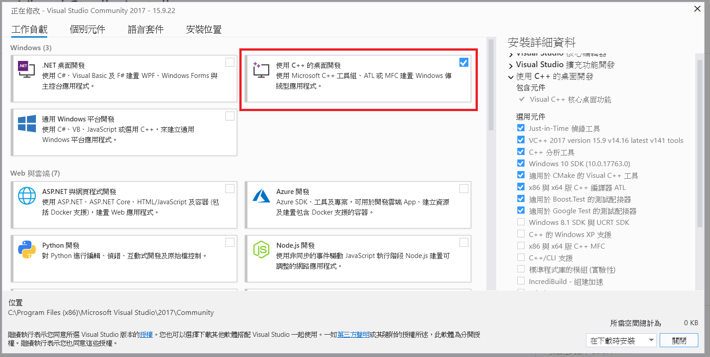
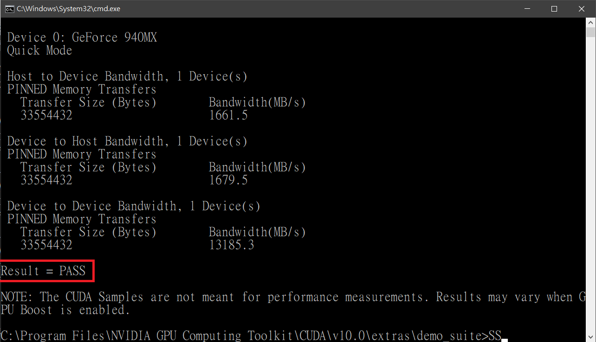
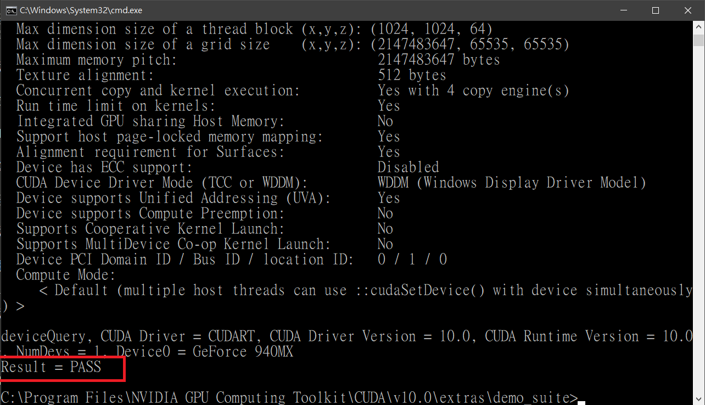

安裝dlib環境花了我大概2天的時間吧…
怕我自己忘記當初安裝的流程、版本和遇到的問題，在這篇文章中記錄下來，有興趣的朋友可以自己玩玩看，基本上很簡單啦，只要版本裝對…
在開始之前，請注意安裝的程式版本很重要，我當初也是因為版本問題所以花了很多時間在安裝程式，還有就是錯誤訊息要看，雖然字很多看得很痛苦，但是盲目猜測錯誤更痛苦。
版本資訊
- 作業系統：Windows10
- python：3.7.3
- dlib：19.19
- cuda：10
- CMake：3.7.0
- Visual Studio 2017
安裝步驟
安裝python
這個就請各位自己查吧
安裝Visual Studio
我是裝Visual Studio Community 2017
有些分享的文章是使用2015、2019版本，我也都安裝過但是都失敗，問題是不是出在VS版本上我也不清楚，但我在查閱資料時有看到dlib不建議使用2019，似乎是因為2019太新了

記得勾選”使用C++的桌面開發”
安裝CMake
安裝CMake
下載網址
安裝CUDA
原本我是使用CUDA9，最後我改用CUDA10就成功了。
下載cudnn
要登入帳號才能下載，記得要對應到CUDA版本。
打開Terminal進到./NVIDIA GPU Computing Toolkit/CUDA/v10.0/extras/demo_suite
執行bandwidthTest.exe

執行deviceQuery.exe

兩個都顯示pass就可以了，但是我也不清楚這邊做了什麼，但是大概就是有沒有配對到你的顯示卡吧，如果有人知道可以告訴我，我會很感謝你。
安裝dlib
dlib 是一款C++的人臉辨識套件，可以編譯成pthon。
接著cmd進入到dlib資料夾
1 | // 這是比較新版本的安裝方法，會自動檢查CUDA，因為我的版本比較新，所以用這個方法 |
確認GPU使用
成功安裝之後就可以使用該套件了，但是若沒有啟用GPU的話便是速度很慢。
檢查的方式如下：
1 | import dlib |
結論
透過安裝dlib讓我學到該怎麼查閱資料，另外就是不要因為錯誤訊息字很多就不看，狠下心來看那些訊息之後會發現錯誤的地方會更加明確，才更好下關鍵字查。
另外資料來源的部份太多了，我沒有存下來，因此只貼上最後我參考的文章，如果我有存下來應該也不會貼，畢竟大概看了一百個網站有了。
之後會再寫相關的文章。
資料來源
- windows10 python 使用dlib cuda 編譯和安裝
- 無數個我忘記儲存下來的網站